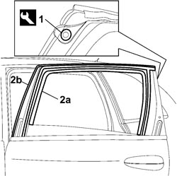

7010D18 REAR SIDE DOOR DESCENDING WINDOW GLASS CHANNEL (ONE), LEFT OR RIGHT - R.R
- Path
- Procedures > 70 FITTINGS > 7010 PASSENGER COMPARTMENT REAR SIDE DOORS > 7010D REAR SIDE DOOR WINDOW GLASSES > 7010D18 REAR SIDE DOOR DESCENDING WINDOW GLASS CHANNEL (ONE), LEFT OR RIGHT - R.R
- Kind
- repair procedure (removal / refitting; the operation number is the code)
- Applies to
- all engines; all production periods
- Interactive page
- https://sloeber94.github.io/elrnDB-fCrm/en/#/194000914
Applies to: all engines; all production periods
 Removing
Removing
 Refitting
Refitting- Open the front side door.
- Completely lower the window.
Op. 7010D26 REAR SIDE DESCENDING WINDOW GLASS SCRAPER (OUTER) (ONE), LEFT OR RIGHT - R.R
Op. 7010E52 REAR DOOR FRONT PILLAR TRIM - R R
Op. 7010E54 REAR DOOR REAR PILLAR TRIM - R R
1. Undo the retaining button using the special tool.
Tool | Description | Function | Validity |
|---|---|---|---|
1878077000 | Knife | Retainer removal |
2. Release the outer casing (2a), release the entire lowering window channel (2b) then remove it via the door frame.

Applies to: all engines; all production periods
Refitting
Removing- Check that the channel is not damaged.
- Fit the lowering window channel checking that it adheres perfectly in its seat, except for the window sliding parts.
- Fit the outer casing and the retaining button in place.
Op. 7010E54 REAR DOOR REAR PILLAR TRIM - R R
Op. 7010E52 REAR DOOR FRONT PILLAR TRIM - R R
Op. 7010D26 REAR SIDE DESCENDING WINDOW GLASS SCRAPER (OUTER) (ONE), LEFT OR RIGHT - R.R
Topics linked from this page (3)
- 7010D26 REAR SIDE DESCENDING WINDOW GLASS SCRAPER (OUTER) (ONE), LEFT OR RIGHT - R.R
- 7010E52 REAR DOOR FRONT PILLAR TRIM - R R
- 7010E54 REAR DOOR REAR PILLAR TRIM - R R